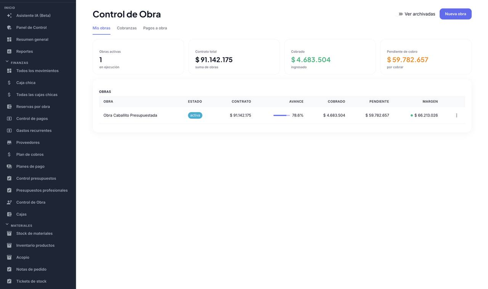
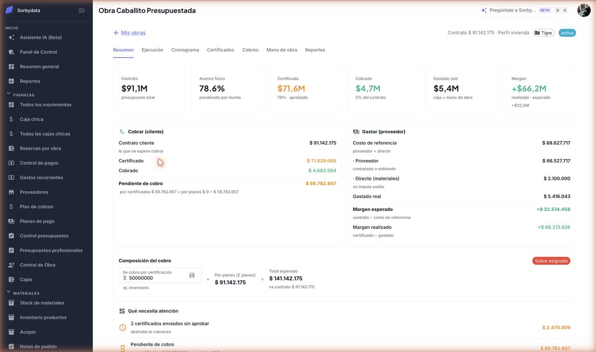
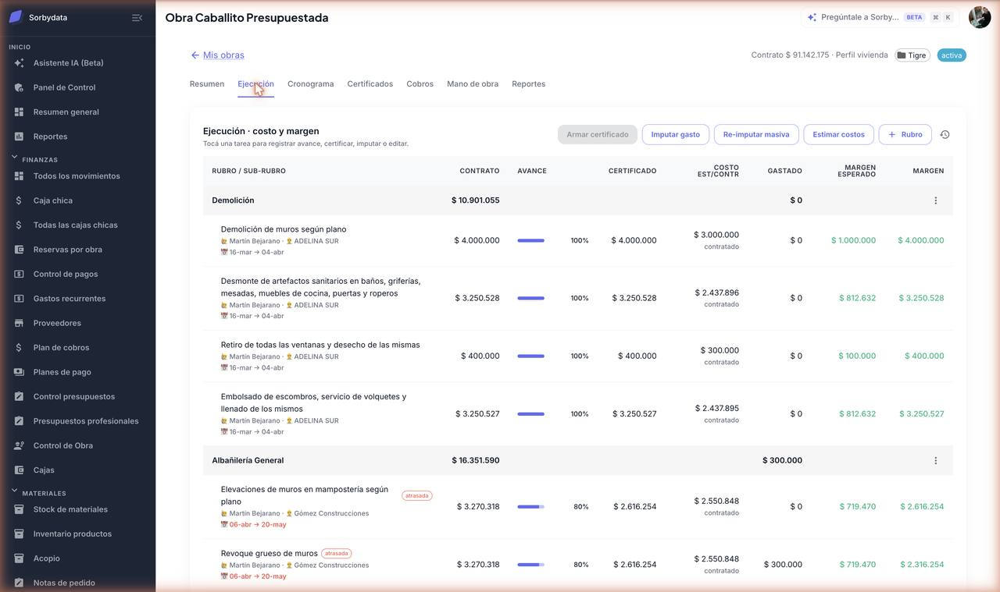
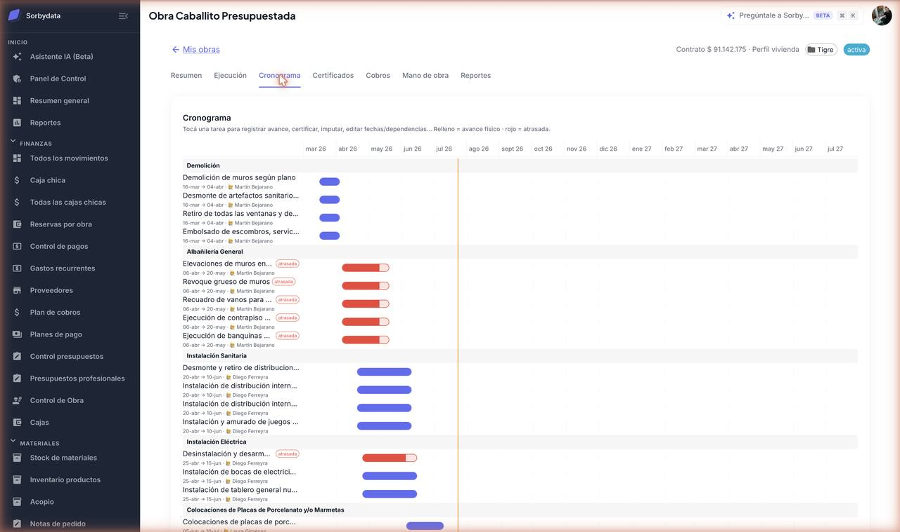
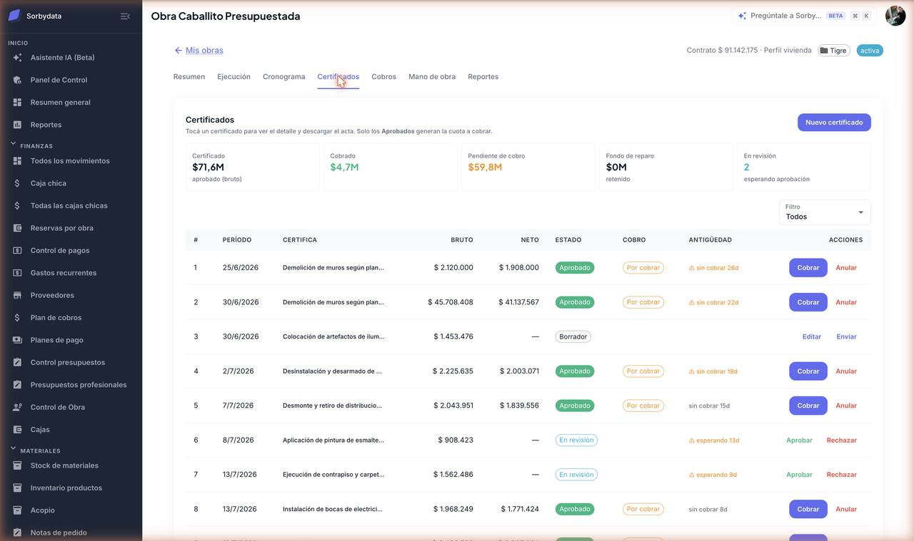
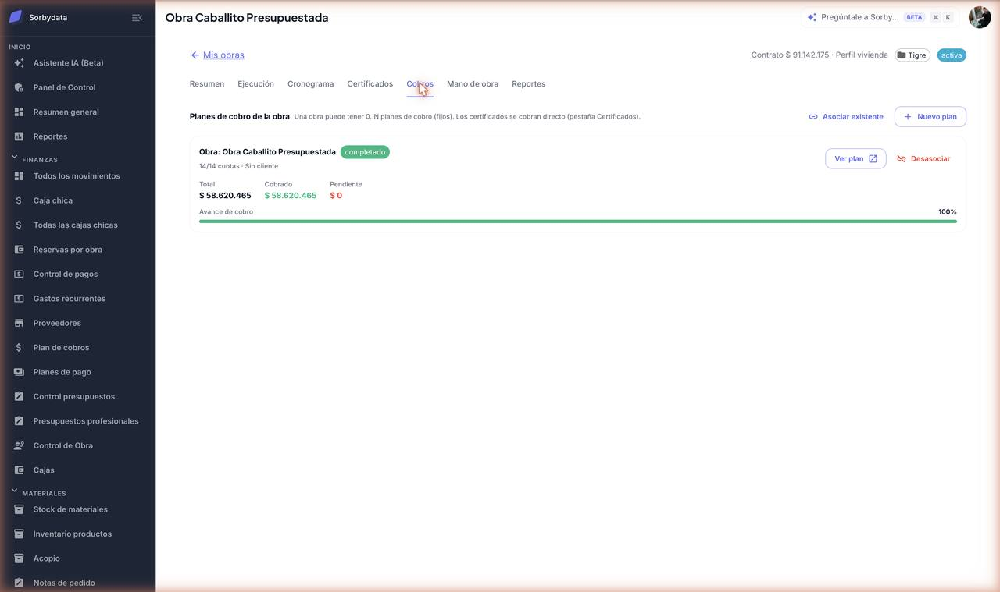

01
Introducción
Toda obra tiene dos caras que funcionan como un espejo. De un lado registrás lo que le vendiste al cliente y vas certificando el avance para cobrarlo. Del otro, lo que te sale hacerlo —el contratista y los materiales— y vas pagando. La diferencia entre las dos es tu margen, y lo calculamos nosotros.
Cómo se organiza una obra
En tres niveles. La tarea —que en la app aparece como sub-rubro— es donde vive todo: su contrato, su avance, su costo, sus gastos y su margen.
Nivel 1
Obra
El proyecto completo, con su contrato total, su cronograma y su cartera de cobros y pagos.
Nivel 2
Rubro
Un agrupador de tareas afines. Por ejemplo, Estructura o Terminaciones.
Nivel 3
Tarea / Sub-rubro
La unidad de trabajo: Losa de techo. Acá cargás avance, costos y gastos, y certificás.
02
Antes de empezar
Para que le saques provecho desde el día uno, conviene tener listo:
- Al menos un proyecto o caja en la empresa: es donde se registran los ingresos y los egresos.
- Tus proveedores cargados. No es obligatorio, pero te ahorra tipear: aparecen solos al asignar contratos y armar planes de pago.
- El presupuesto de la obra. Puede ser un presupuesto profesional ya cargado, o directamente tu planilla en Excel, PDF o fotos: la subís y armamos la obra sola.
- Tus categorías y subcategorías configuradas. Tampoco es obligatorio, pero si están, al importar reconocemos a qué categoría va cada tarea y después el bot puede imputar los gastos solo.
- El permiso VER_PLANES_PAGO activado para quien tenga que ver la hoja general de pagos.
Cómo activamos el permisoEntrá a Configuración general de la empresa → Acciones y tildá VER_PLANES_PAGO. Sin eso, el ítem “Planes de pago” no aparece en el menú.
03
Mapa del módulo
El listado de obras es la puerta de entrada: te muestra los números de toda tu cartera —obras activas, contrato total, cobrado y pendiente— el botón para crear una obra y un switch para ver las archivadas.

Dentro de cada obra hay siete vistas. Tocá cada una para ver qué resuelve:
Resumen · la foto de la obra
Vas a ver los dos lados enfrentados: lo que cobrás —contrato, certificado y cobrado— y lo que gastás —costo de referencia desglosado en proveedor y directo, gastado real y márgenes.
También la composición del cobro: cuánto esperás cobrar por certificación y cuánto por planes, con una señal de cobertura, las alertas de la obra y la curva de avance.
Ejecución · el corazón
La grilla con contrato, avance, certificado, costo, gastado y margen de cada tarea. Desde acá registrás avance, cargás costos, imputás gastos y armás certificados.
Cronograma · los tiempos
Fechas de inicio y fin, duración y dependencias entre tareas. Las que vencieron sin terminarse te las marcamos como atrasadas.
Certificados · valorizar el avance
Cada certificado convierte avance en dinero cobrable y sigue su circuito de aprobación con el cliente.
Cobros · cómo te paga el cliente
Los planes de cobro de la obra. Puede tener ninguno, uno o varios: por ejemplo, uno por cada unidad vendida.
Mano de obra · cómo pagás
Órdenes sugeridas por avance, órdenes de pago con su circuito de aprobación, y planes de pago a proveedores en cuotas.
Reportes · cierre y seguimiento
El conforme de obra para el cierre y el registro de inconvenientes durante la ejecución.

Y fuera de la obra tenés tres hojas de cartera que cruzan todo: Cobranzas, Pagos y Planes de pago.
04
Crear una obra
Entrá a Control de Obra y tocá Nueva obra. Te vamos a pedir tres cosas: el origen —de dónde salen los rubros y tareas—, el perfil de obra —que define la indexación CAC, la retención y el anticipo por defecto— y, si querés, el proyecto al que se asocia.
Las cuatro formas de armarla
Opción A
Desde un archivo
Subís tu presupuesto en Excel, PDF o fotos y armamos la obra sola, con sus rubros y montos. No hace falta que pase por Presupuesto Profesional.
Opción B
Desde un presupuesto profesional
Elegís uno ya armado y la obra hereda sus rubros, título y proyecto. Es el camino más rápido si ya cotizaste ahí.
Opción C
Desde categorías
Armamos la estructura con las categorías de tu empresa y sumamos los presupuestos del proyecto. Después borrás lo que no aplique.
Opción D
Carga manual
Ponés un título y cargás vos los rubros y tareas, con su nombre y su monto.
Ojo con el montoEl monto de cada tarea es el contrato con el cliente, o sea lo que vas a cobrar. El costo se carga aparte, en Ejecución.
Cómo funciona el import desde archivo
Elegís Desde archivo, subís tu planilla y esperás unos segundos: leemos el archivo y creamos la obra directamente. Sirve tanto una planilla detallada (con cantidades y precios unitarios) como una de resumen, con una fila por rubro y su importe total.
Además de la estructura y los montos, aprovechamos lo que el archivo traiga:
- Avance inicial. Si hay una columna de avance o ejecutado, cada tarea arranca con ese porcentaje. Ideal para cargar una obra que ya está en curso.
- Categorías. Intentamos reconocer a qué categoría y subcategoría de tu empresa corresponde cada tarea, para que después el bot pueda imputar los gastos solo. Sólo usamos nombres que ya existen en tu configuración: ante la duda lo dejamos vacío, y lo imputás a mano.
No toca la cajaImportar un presupuesto no genera ningún movimiento de caja. Es sólo la estructura de la obra: lo que ya se pagó en un proyecto que venías llevando por afuera se registra aparte.
Revisá los totales la primera vezAl terminar te mostramos las observaciones de lo que no pudimos interpretar. Descartamos las filas de cierre (“Subtotal…”, “Total…”) para no contar la misma plata dos veces, pero conviene comparar el total de la obra contra el de tu planilla. Si no coinciden, muchas veces el que está desactualizado es el subtotal del archivo.
Ningún rubro queda vacíoSi un rubro viene sin tareas —típico de las planillas de resumen—, le creamos una con el mismo nombre y su importe. Es necesario porque la tarea es la unidad que se certifica y donde se imputan los gastos: un rubro sin tareas no se podría usar.
05
Ejecución
Es donde vive el día a día. Tocá cualquier tarea y se abre su detalle: arriba el resumen de números —contrato, costo, gastado, certificado y márgenes— y abajo una sección por cada cosa que podés hacer.

Registrar el avance
Detalle de la tarea → Avance físico → Registrar. Es el porcentaje realmente ejecutado en obra. No puede ser menor a lo que ya certificaste.
Cargar el costo: proveedor + directo
El costo de una tarea se parte en dos partes que se suman: lo que hace un contratista y lo que comprás vos.
- Costo estimado (proveedor): la parte que ejecuta un contratista. Si después le asignás un contrato, ese valor manda sobre el estimado.
- Costo directo (materiales u otros): lo que comprás y vas imputando suelto.
La suma de las dos es el costo de referencia, y contra él medimos el margen y el sobrecosto. Probalo acá:
Simulá una tarea
Resultado
Por qué te conviene cargar el costo directoSi no lo cargás, los materiales que imputes van a superar el costo de referencia y la tarea te va a aparecer en rojo, como si te hubieras excedido, cuando en realidad estaba todo previsto. Poné el costo directo en cero en la simulación y mirá qué pasa.
Estimar costos en masa
El botón Estimar costos completa todas las tareas de una. Elegís la dirección —costo a partir del contrato menos un porcentaje, o contrato a partir del costo más un markup— y si querés respetar lo ya cargado.
Asignar un proveedor
Detalle de la tarea → Proveedor / contrato. Elegís el contratista, el costo del contrato y cómo se devenga el pago: por avance físico o por certificado.
Imputar gastos
Los gastos son un tema en sí mismo, con dos caminos posibles. Lo vemos en la sección que sigue.
06
Cargar gastos
Imputar es decirle al sistema a qué tarea corresponde un gasto. Hay dos caminos y terminan en el mismo lugar: un egreso en la caja, pegado a una tarea de la obra, que suma al gastado y mueve el margen.
Camino 1
Desde WhatsApp
Mandás el gasto y lo imputamos nosotros. Es el camino del día a día, el que usa la gente que está en la obra.
Camino 2
Desde la web
Tomás un gasto ya cargado en la caja y lo asignás vos. Sirve para ordenar, corregir o repartir entre tareas.
Desde WhatsApp
Es lo más rápido y no requiere entrar a la app:
- Le mandás el gasto al bot: un mensaje como “pagué 80 mil de hierro para la losa”, o directamente la foto del comprobante.
- Leemos el monto, el proveedor y la categoría, y proponemos a qué tarea corresponde.
- Buscamos la obra del proyecto al que estás cargando el gasto —cada proyecto tiene su obra— y buscamos la tarea por nombre.
- Si la encontramos, el gasto queda imputado a esa tarea y te lo confirmamos como Rubro › Tarea.
- Si no la encontramos, te preguntamos a cuál va.
Un ejemplo real. Le escribís esto y listo:
1. ✅ Sí 2. 📝 No, quiero corregirlo 3. 📷 Confirmar y actualizar foto 4. ❌ Cancelar
Mirá la línea Sub-rubro: de “en limpieza final” sacamos la tarea, y de “en la obra tigre”, el proyecto. Contestás 1 y el gasto queda cargado e imputado. Si algo salió mal, con 2 lo corregís sin volver a escribir todo.
Preferimos preguntar antes que errarSi el nombre no coincide con ninguna tarea de la obra, no adivinamos: te preguntamos. Un gasto mal imputado te ensucia el margen de dos tareas a la vez, así que prevenimos.
Para que acierte más seguidoPonele a las tareas nombres parecidos a como las nombrás hablando. Si en la obra le decís “la losa”, que la tarea no se llame “Ejecución de entrepiso H°A° nivel +3.00”. Y si tenés las categorías configuradas, también podemos imputar por ahí.
Desde la web
Cuando abrís un gasto para editarlo —haya entrado por WhatsApp, por mail o lo hayas cargado a mano— en el bloque Clasificación tenés el interruptor Imputar a Control de Obra. Lo tildás y se despliega la lista de tareas de la obra, cada una con su casillero de porcentaje.
Un ejemplo: una factura de mano de obra de $1.500.000 que cubrió dos frentes.
- Demolición · Demolición de muros según plano60 %
- Albañilería General · Revoque grueso de muros40 %
- Instalación Sanitaria · Desmonte de cañerías obsoletas0 %
- Instalación Eléctrica · Desarmado de bocas existentes0 %
- Suma100 % ✓
Con eso, $900.000 se van al gastado de Demolición de muros y $600.000 al de Revoque grueso. Si el gasto fuera de una sola tarea, le ponés 100 a esa y listo. Los porcentajes tienen que sumar 100: te lo marcamos abajo mientras cargás.
También podés hacerlo al revés, desde la obra: en Ejecución → Imputar gasto te listamos los egresos de la caja para que elijas cuál asignar. Y si ya cargaste muchos sin imputar, Re-imputar masiva los corrige en lote en vez de uno por uno.
El gasto tiene que estar en la caja correctaSolo podés imputar egresos del proyecto al que pertenece la obra. Si no aparece el que buscás, fijate que se haya cargado en esa caja.
07
Cronograma
La vista de tiempos. Cada tarea tiene fecha de inicio, duración y fecha de fin, y podés encadenarlas con dependencias: una arranca cuando termina la anterior. Si movés la primera, recalculamos las que siguen.
Dónde se cargan las fechas. El Cronograma es sólo la vista; las fechas se cargan por tarea. Tocá una tarea —acá mismo o en Ejecución— y elegí Editar tarea: ahí definís inicio, duración y fin. Con la duración cargada, el fin se calcula solo. Y si la tarea depende de otra, dejá el inicio vacío: arranca sola cuando termina la anterior.
Las tareas cuya fecha de fin ya pasó sin estar completas quedan marcadas como atrasadas y te las mostramos en las alertas del Resumen.

08
Certificados
Un certificado convierte avance en dinero cobrable. Lo armás desde Ejecución → Armar certificado, que junta las tareas con avance sin certificar, o a mano desde la pestaña Certificados.
Cómo lo calculamosEl monto de cada línea es (avance nuevo − avance anterior) ÷ 100 × contrato de la tarea. Certificás sobre el contrato con el cliente, proporcional a lo ejecutado. Nunca sobre el total ni sobre la composición del cobro.
Cada certificado recorre este circuito. Tocá un estado para ver qué podés hacer:
Te avisamos cuando un certificado lleva demasiados días esperando aprobación, o cuando está aprobado hace rato y todavía no lo cobraste.

Registrar el cobro de un certificado
Cuando el cliente te paga, tocás Cobrar en la fila del certificado. Podés hacerlo desde la pestaña Certificados o desde la hoja Cobranzas, sin entrar a la obra.
- Solo se cobran los certificados aprobados. Si todavía está en revisión, primero hay que aprobarlo.
- Se cobra el neto: el bruto menos las retenciones y menos la amortización del anticipo, si la obra tiene esos conceptos configurados.
- Podés registrar un cobro parcial. El saldo queda pendiente y te lo seguimos mostrando en Cobranzas hasta que entre completo.
Al confirmarlo generamos el ingreso en la caja del proyecto de la obra, identificado como Cobro · Certificado N y ya imputado a la obra. No tenés que cargar nada a mano en la caja.
09
Cobros
Acá manejás cómo te paga el cliente. Una obra puede tener ninguno, uno o varios planes de cobro: por ejemplo, uno por cada unidad vendida. Podés crear uno nuevo ya asociado a la obra, vincular uno existente o desvincularlo sin borrarlo.

Esto es importanteLos certificados y los planes de cobro se suman: pueden cobrar plata distinta, como inversores por certificación y compradores por plan. Por eso te mostramos el pendiente desglosado por fuente, y no los restamos entre sí.
Registrar el cobro de una cuota
Cada plan tiene su calendario de cuotas, con su vencimiento. Cuando entra la plata, tocás Cobrar en la cuota. Igual que con los certificados, lo podés hacer desde la obra o desde la hoja Cobranzas, que te junta todo lo que tenés por cobrar de todas las obras.
- Podés cobrar la cuota completa o una parte. Si es parcial, queda como cobrada parcial y el saldo te sigue apareciendo como pendiente.
- Generamos el ingreso en la caja automáticamente, igual que con los certificados.
- Las cuotas vencidas sin cobrar se marcan en rojo en Cobranzas, así ves de un vistazo qué reclamar.
Dos formas de cobrar, un solo lugar para mirarlasUn certificado se cobra por avance ejecutado; una cuota, por calendario. Las dos terminan como ingreso en la misma caja, y las dos te aparecen juntas en Cobranzas.
10
Mano de obra
Todo lo que sale de tu caja hacia los contratistas. Son tres bloques.
Órdenes sugeridas por avance
Calculamos lo devengado a cada contratista según el avance —o lo certificado, según cómo configuraste su contrato— y te proponemos la orden ya armada. Tocás Generar orden y queda en borrador.
Órdenes de pago
Una orden de pago es un pago puntual a un contratista, con un circuito de aprobación para que nadie desembolse solo. Por dentro es una lista de líneas: una por cada tarea que le estás pagando, con su monto. El total de la orden es la suma de esas líneas.
La armás de dos maneras: tocando Nueva orden —elegís el contratista y cargás las líneas— o dejando que la generemos nosotros desde una sugerencia por avance.
Después recorre este circuito. Tocá un estado para ver qué significa:
Pagar la orden ya imputa el gastoCuando la marcás como pagada generamos el egreso en la caja del proyecto —como Mano de obra · nombre del contratista— y lo repartimos entre las tareas de la orden, en proporción a lo que cargaste en cada línea. No tenés que imputarlo aparte: el gastado de esas tareas se actualiza solo.
¿Orden de pago o plan de pago?
Se confunden seguido, pero resuelven cosas distintas:
Una vez
Orden de pago
Le pagás algo puntual al contratista: lo que devengó este mes, un adelanto suelto. Se arma, se aprueba y se paga.
Un calendario
Plan de pago
Acordaste pagarle en cuotas. Armás el plan una vez y después vas pagando cuota por cuota, con sus vencimientos.
Planes de pago a proveedores
Para pagar en cuotas, con anticipo, refuerzos, periódicas o por avance. Hay tres maneras de armarlo, según a qué quede atado:
Dentro de la obra
Plan de obra
Desde Mano de obra → Nuevo plan de pago. Queda asociado a esa obra y los pagos se imputan a las tareas del proveedor.
Atado a una tarea
Plan por tarea
En el asistente general, al elegir obra aparece Tarea (opcional). Si elegís una, todos los pagos del plan se imputan ahí.
Sin obra
Plan suelto
Desde la hoja Planes de pago, dejás Obra vacío y elegís un proyecto o caja destino. Sirve para gastos generales.
Ya creado el plan, cada cuota recorre su propio circuito:
Un límite a tener en cuentaLa modalidad “por avance” solo está disponible cuando el plan pertenece a una obra, porque necesita tareas contra las cuales devengar. En un plan suelto cargás las cuotas a mano o periódicas.
11
Reportes
Conforme de obra. Emitís el acta de conformidad cuando cerrás la obra.
Inconvenientes. Registrás los problemas que van apareciendo y los vas marcando como resueltos. Los que quedan pendientes te los mostramos en las alertas del Resumen.
12
Cartera
Tres vistas que cruzan todas tus obras, para trabajar por tarea en vez de obra por obra.
| Hoja | Qué te muestra | Qué podés hacer |
|---|---|---|
| Cobranzas | Todo lo que tenés por cobrar —certificados y cuotas— con el pendiente y lo vencido. | Filtrar por obra y vencimiento, y cobrar directo sin entrar a la obra. |
| Pagos | Órdenes pendientes, separando lo aprobado a desembolsar de lo que sigue en borrador. | Aprobar y pagar órdenes de cualquier obra. |
| Planes de pago | Todos los planes de la empresa, de obras y sueltos, con proveedor, total, pagado y pendiente. | Crear planes nuevos y entrar al detalle de cada uno. |
13
Cuando algo no sale
Importé mi planilla y quedó todo en $0
Casi siempre es que en el archivo los importes no están en una columna reconocible, o la fila mezcla varios datos en una misma celda.
Fijate que haya una columna con el importe (“Total”, “Importe”, “Monto”) o bien cantidad y precio unitario por separado. Si tu planilla es rara, cargá los rubros a mano y seguí: la obra igual sirve.
El total de la obra no coincide con el de mi planilla
Lo más común es que el subtotal del archivo esté desactualizado: si alguien editó un rubro y el subtotal era un número escrito a mano en vez de una fórmula, quedó viejo.
Nosotros sumamos los rubros, así que ese total es el correcto. Compará la suma de los rubros de tu planilla contra su celda de subtotal y vas a ver la diferencia.
Aparecieron rubros de más, como “Subtotal” o “Total”
Son las filas de cierre de la planilla, que no son trabajo a ejecutar sino la suma de las de arriba.
Las descartamos automáticamente para no contar la misma plata dos veces. Si igual se te coló alguna, borrala desde el menú del rubro en Ejecución.
El archivo tenía avance pero las tareas arrancaron en 0
Sólo tomamos el avance cuando viene en una columna clara (“Avance”, “% Ejec.”, “Ejecutado”) y con un valor entre 0 y 100.
Nunca lo deducimos de los montos: preferimos que arranque en 0 y lo cargues vos, antes que inventar un avance y que después certifiques de más.
No veo un botón o un campo nuevo
El navegador te está mostrando una versión cacheada.
Recargá forzando con Cmd/Ctrl + Shift + R.
Una tarea marca sobrecosto aunque estaba todo previsto
Los materiales no estaban cargados como costo esperado.
Cargá el costo directo de la tarea: el costo de referencia pasa a incluirlos y el rojo desaparece.
No me deja eliminar una tarea
Tiene avance ya certificado.
Anulá primero el certificado que la incluye, o dejá la tarea sin avance certificado.
El avance no baja de cierto porcentaje
El mínimo posible es lo que ya certificaste.
Si necesitás corregir para abajo, anulá antes el certificado correspondiente.
El Resumen dice “falta asignar”
Lo declarado por certificación más lo de los planes no cubre el contrato total.
Ajustá la composición del cobro o asociá un plan que cubra la diferencia.
No puedo activar el permiso de planes de pago
El permiso no estaba disponible en la lista de acciones.
Entrá a Configuración general de la empresa y tildá VER_PLANES_PAGO.
Al crear un plan suelto me pide un proyecto
Un plan sin obra necesita saber en qué caja registrar los egresos.
Elegí un proyecto o caja destino y seguís.
“Generar por avance” da error en un plan suelto
Esa modalidad devenga contra las tareas de una obra, y un plan suelto no tiene.
Cargá las cuotas a mano o usá cuotas periódicas.
El buscador de proveedores aparece vacío
Todavía no tenés proveedores en el catálogo de la empresa.
Escribí el nombre a mano —funciona igual— o cargá el proveedor para tenerlo la próxima.
Avance alto pero gastado muy bajo
Lo más probable es que haya gastos sin imputar a la obra.
Usá Imputar gasto o Re-imputar masiva desde Ejecución.
14
Glosario
- Obra
- El proyecto de construcción que seguís, dividido en rubros y tareas.
- Rubro
- Agrupador de tareas afines dentro de la obra.
- Tarea / Sub-rubro
- La unidad de trabajo, con su contrato, avance, costo y margen. En la app la vas a ver como “sub-rubro”.
- Perfil de obra
- Preset que define indexación CAC, retención y anticipo por defecto.
- Contrato (cliente)
- Lo que le cobrás al cliente por la tarea: el precio de venta.
- Avance físico
- Porcentaje realmente ejecutado en obra.
- Certificado
- Documento que valoriza el avance para poder cobrárselo al cliente.
- Costo estimado
- La parte del costo de la tarea que ejecuta un contratista.
- Costo directo
- Materiales y gastos sueltos que se imputan aparte del proveedor.
- Costo de referencia
- El costo esperado total de la tarea: proveedor más directo.
- Contrato de proveedor
- El acuerdo con el contratista: su costo y cómo se devenga el pago.
- Importar
- Crear la obra subiendo tu planilla (Excel, PDF o fotos), en vez de cargarla a mano.
- Planilla de resumen
- Presupuesto con una fila por rubro y su importe total, sin cantidades ni precios unitarios.
- Fila de cierre
- Las líneas “Subtotal” o “Total” de una planilla: son la suma de las de arriba, no trabajo a ejecutar. Al importar se descartan.
- Imputar
- Asociar un gasto de caja a una tarea de la obra.
- Gastado
- Lo efectivamente imputado a la tarea.
- Margen esperado
- Contrato del cliente menos costo de referencia. Es proyectado.
- Margen realizado
- Certificado menos gastado. Es lo que ya ocurrió.
- Sobrecosto
- Cuando el gastado supera el costo de referencia de la tarea.
- Orden de pago
- Pago puntual a un contratista, con su circuito de aprobación.
- Plan de cobro
- Cómo te paga el cliente: cuotas, unidades, anticipos.
- Plan de pago
- Cómo le pagás a un proveedor: cuotas, anticipo, por avance.
- Plan suelto
- Plan de pago que no pertenece a una obra; se imputa a la caja de un proyecto.
- Proyecto / caja
- Dónde se registran los ingresos y egresos.
- Composición del cobro
- Cómo se reparte lo que esperás cobrar entre certificación y planes.
- Cobertura
- Señal de si lo asignado alcanza, falta o excede el contrato.
- Conforme de obra
- Acta de conformidad que se emite al cierre.
- Inconveniente
- Problema registrado durante la obra, con seguimiento hasta resolverlo.
No encontramos términos con esa búsqueda.